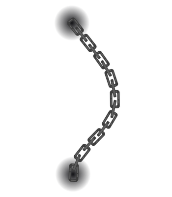
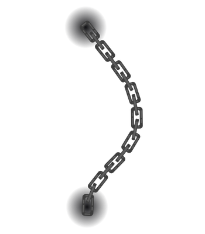
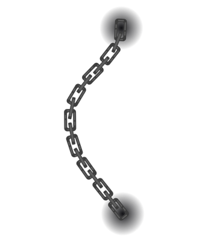

Hey!
I'm Allane Lee Castro, a sophomore BS Computer Science student at the University of the Philippines Los Baños (UPLB) with a growing passion for Cybersecurity and Network Engineering. I enjoy exploring how systems work under the hood and how they can be protected (and destroyed).
I'm part of the Alliance of Computer Science Students – UPLB and a Voyager-ranked learner on TryHackMe, where I actively practice and improve my offensive and defensive security skills.
 

Skills
A collection of programming, systems, and cybersecurity-related tools I've worked with so far.
- Python
- Lua
- Bash Scripting
- Arduino (C++)
- Wireshark
- Nmap
- Linux Administration
- Flipper Zero
- Java
- C

RudeBlox
A series of injectable exploits and hacks I have created using Lua and Python for several games on Roblox.
Meddled with keyboard automation, player ESPs, wallhacks, force crashes, and took advantage of client-side vulnerabiltiies to either annoy people or win games!
Bandit Writeups
A series of writeups I made after completing the Bandit Catch the Flag challenges.
Learned terminal commands and shortcuts, thus starting my CTF journey. I uploaded my learnings on Github to track my progress.
Smart Vendi
A portable, battery-powered, Arduino-based vending machine that dispenses school supplies.
Built with Arduino Uno, I wired and prorgrammed both the hardware and software of this machine and donated it to an elementary school.
iReady
An relief optimizer using random forest model to predict typhoon risk levels in local communities.
This project is an entry to the Philippine Junior Data Science Competition as part of the top 10 finalists who pitched in UP Diliman.
SemSync
A Java-based semester scheduling application where I hand-drawn UI elements with a horror twist!
It uses OOP to deliver functionalities for planning and editing schedules, inspired by UPLB's AMIS site but with Omori-inspired jumpscares as a mockery of the system and representation of the anxieties experienced by students during enlistment season.